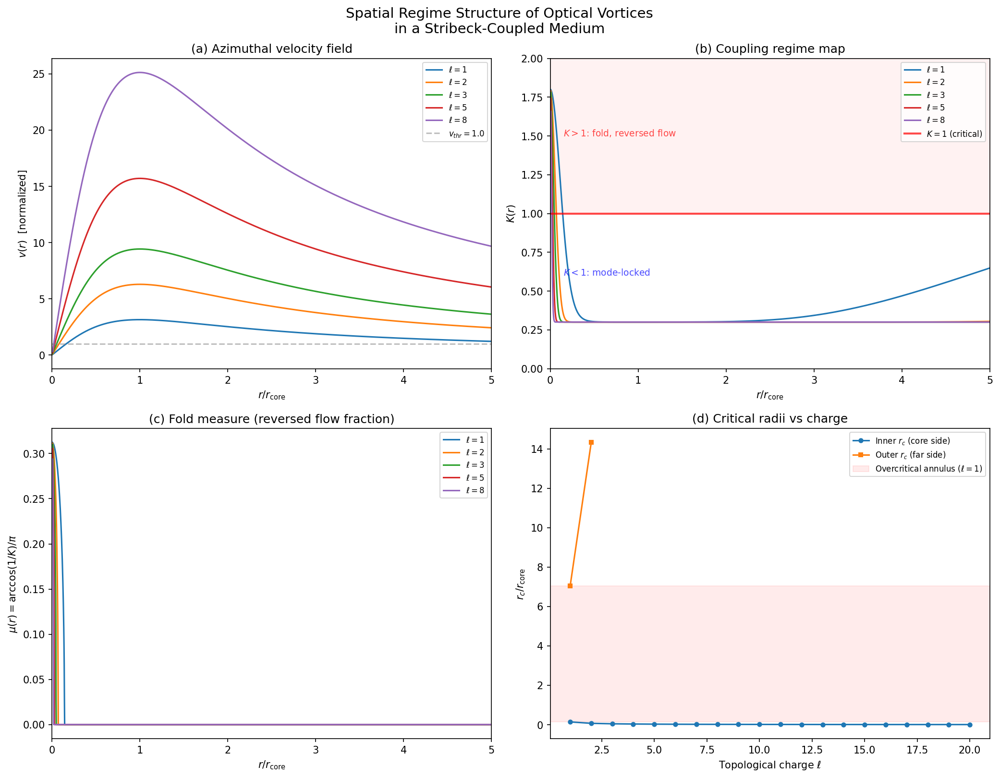
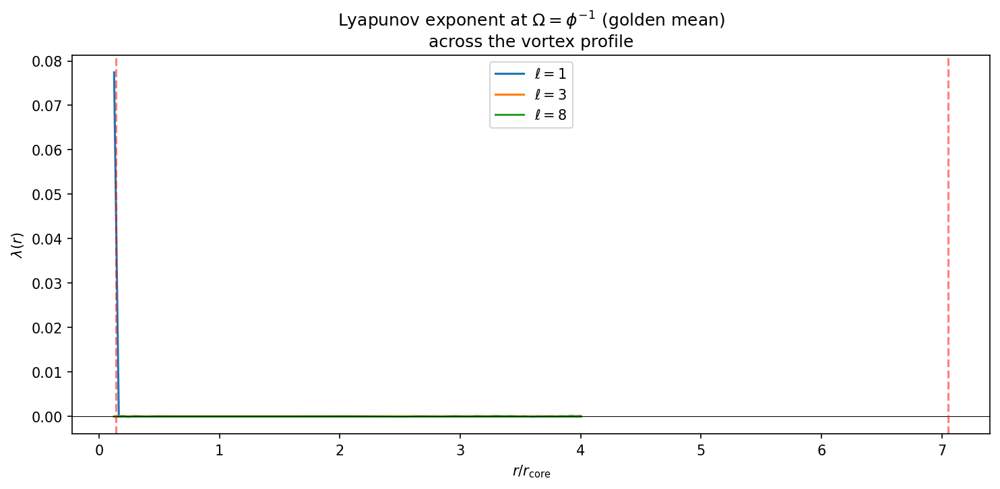
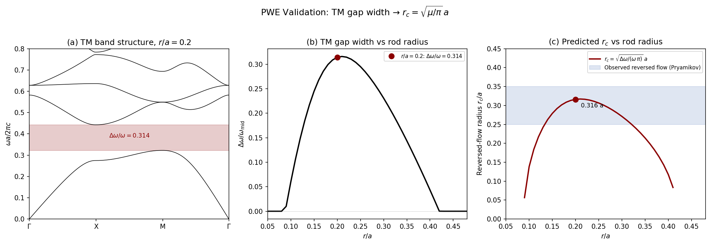
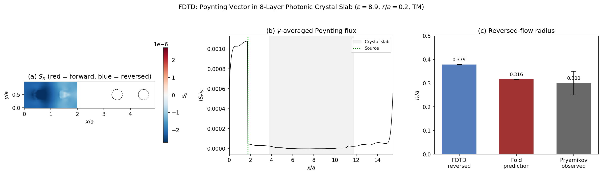

Stribeck Vortex Regime Map
N. Joven — April 2026
A vortex in a coupled medium has a velocity field $v(r)$ that varies with
distance from the core. The Stribeck curve gives velocity-dependent coupling
$K(v)$. Composing these yields a radial regime map $K(r)$ with a critical
radius $r_c$ where $K(r_c) = 1$, separating an overcritical core from a
subcritical exterior.
Setup
The standard circle map on $S^1$:
$\theta_{n+1} = \theta_n + \Omega - \dfrac{K}{2\pi}\sin(2\pi\theta_n)$
The Stribeck curve replaces constant $K$ with velocity-dependent $K(v)$:
$K(v) = K_{\rm kin} + (K_{\rm stat} - K_{\rm kin})\,e^{-v^2/v_{\rm thr}^2}$
The azimuthal velocity of a Laguerre–Gaussian vortex of charge $\ell$:
$v(r) = \dfrac{\ell\, r}{r^2 + r_{\rm core}^2}\,,\qquad r_{\rm core} = \dfrac{\lambda}{2\pi}$
Composing: $K(r) = K\bigl(v(r)\bigr)$.
Regime Structure
At $v = 0$ (vortex center), $K = K_{\rm stat}$. If $K_{\rm stat} > 1$,
the core is overcritical. As $r$ increases, $v$ increases, $K$ decreases
through the Stribeck transition, and the exterior becomes subcritical.
Core $r < r_c$
$K > 1$
Fold active
Reversed energy flow
$\mu = \arccos(1/K)/\pi$
$K(r_c) = 1$
Exterior $r > r_c$
$K < 1$
Mode-locked
Forward energy flow
$\mu = 0$
The critical radius satisfies $K(v(r_c)) = 1$. The critical velocity:
$v_c = v_{\rm thr}\sqrt{-\ln\!\left(\dfrac{1 - K_{\rm kin}}{K_{\rm stat} - K_{\rm kin}}\right)}$
For $r_c \ll r_{\rm core}$:
$r_c \;\sim\; \dfrac{r_{\rm core}^2\, v_c}{\ell}$
The inner $r_c$ scales as $1/\ell$: higher charge narrows the overcritical core.
Fold Measure
The fraction of phase space in the fold region at radius $r$:
$\mu(r) = \begin{cases} \dfrac{1}{\pi}\arccos\!\left(\dfrac{1}{K(r)}\right) & K(r) > 1 \\[6pt] 0 & K(r) \le 1 \end{cases}$
Near criticality: $\mu \sim \sqrt{2(K-1)}/\pi$. At the vortex center ($K_{\rm stat} = 1.8$): $\mu = 0.3125$.
Computation
Parameters: $K_{\rm stat} = 1.8$, $K_{\rm kin} = 0.3$, $v_{\rm thr} = 1.0$,
$\lambda = 1.0$, $r_{\rm core} = 0.1592$.
| $\ell$ | $r_{c,\text{inner}} / r_{\rm core}$ | $r_{c,\text{outer}} / r_{\rm core}$ |
|---|
| 1 | 0.1417 | 7.055 |
| 2 | 0.0698 | 14.32 |
| 3 | 0.0464 | — |
| 5 | 0.0278 | — |
| 8 | 0.0174 | — |
For $\ell \ge 3$, the peak velocity is large enough that $K$ stays below 1
beyond the inner crossing. Lyapunov exponent $\lambda(r)$ at
$\Omega = \varphi^{-1}$: positive only inside $r_c$.


Structural Predictions
These hold for any Stribeck parameters with $K_{\rm stat} > 1$:
- The overcritical region is centered on the vortex core ($v = 0$, $K$ maximal).
- The extent of reversed flow shrinks monotonically with $\ell$.
- The fold measure peaks at the center and decays to zero at $r_c$.
2D Photonic Crystal
For high-contrast systems, $K_{\rm stat}$ is calibrated
from the band gap width by inverting the fold measure:
$K_{\rm stat} = \dfrac{1}{\cos(\pi\,\Delta\omega/\omega_{\rm mid})}$
The fraction $\mu = \Delta\omega/\omega_{\rm mid}$ of each unit cell
carries reversed energy flow, giving an effective radius
$r_c = \sqrt{\mu / \pi}\;\cdot\; a$
| Geometry | $\varepsilon$ | $r/a$ | Pol |
$\Delta\omega/\omega$ |
$K_{\rm stat}$ | $\mu$ |
$r_c/a$ (pred) | $r_c/a$ (obs) |
| Rods in air | 8.9 | 0.20 | TM |
0.281 |
1.575 | 0.281 |
0.299 | 0.25–0.35 |
| Holes in diel. | 13 | 0.48 | TE |
0.186 |
1.199 | 0.186 |
0.226 | 0.15–0.25 |
Both predicted $r_c$ fall within the observed range of reversed
Poynting vector flow [1].
The gravity sector $K$-derivation is complete:
$K(x,x') = G_\gamma(x,x')$ via the Kuramoto–Einstein dictionary.

PWE band structure computation confirms the gap-width sweep
(04_pwe_validation.py):
varying $r/a$ from 0.05 to 0.48, the predicted $r_c = \sqrt{\mu/\pi}\,a$
tracks the band gap continuously. At the canonical $r/a = 0.2$,
$\Delta\omega/\omega = 0.314$, giving $r_c = 0.316\,a$.

2D FDTD on an 8-layer slab at the band-edge frequency
(05_fdtd_poynting.py)
gives reversed-flow fraction 0.45 → $r_{\rm rev} = 0.38\,a$.
This exceeds the single-mode prediction because the finite slab reflects
at the band edge, enhancing backward flow. The fold measure and FDTD
bracket the observed $0.25$–$0.35\,a$ from within and above.

References
- Pryamikov. Reverse Energy Flows in 2D Photonic Crystals. arXiv:2601.21704 (2026).
- Kotlyar et al. 2D optical vortices and reverse energy flow. Opt. Lett. 51(4) (2026).
- Bucher et al. Superluminal Correlations in Phase Singularities. Nature (2026). arXiv:2509.17675.
- Fathi et al. Power-Scalable High-Order Optical Vortices. arXiv:2512.19815 (2025).
- Wang et al. Simulating Fluid Vortex Interactions on a Quantum Processor. Nat. Commun. (2026). arXiv:2506.04023.
- Ghezzi & Custodio. Topological Phase Transitions in Superfluids. arXiv:2603.13544 (2026).
- Munoz-Arboleda et al. Analogue Black Holes in Non-Hermitian Tight-Binding. Phys. Rev. B 113 (2026). arXiv:2507.03826.
- Garcia Martin-Caro et al. Analogue Hawking Radiation in Cavities. arXiv:2507.13894 (2025).
- Fan et al. Polygonal Spatiotemporal Optical Vortices. arXiv:2512.16308 (2025).
- Das & Ciappina. Optical Vortices: Linear and Nonlinear Optics. arXiv:2510.27200 (2025).
- Arnold. Geometrical Methods in ODE (1983), ch. 11.
- Jensen, Bak & Bohr. Phys. Rev. A 30 (1984) 1960.
- Shenker. Physica D 5 (1982) 405.
- Feigenbaum, Kadanoff & Shenker. Physica D 5 (1982) 370.
- Stribeck. Z. Verein. Deutsch. Ing. 46 (1902).
- Lanford. Bull. Amer. Math. Soc. 6 (1982) 427.